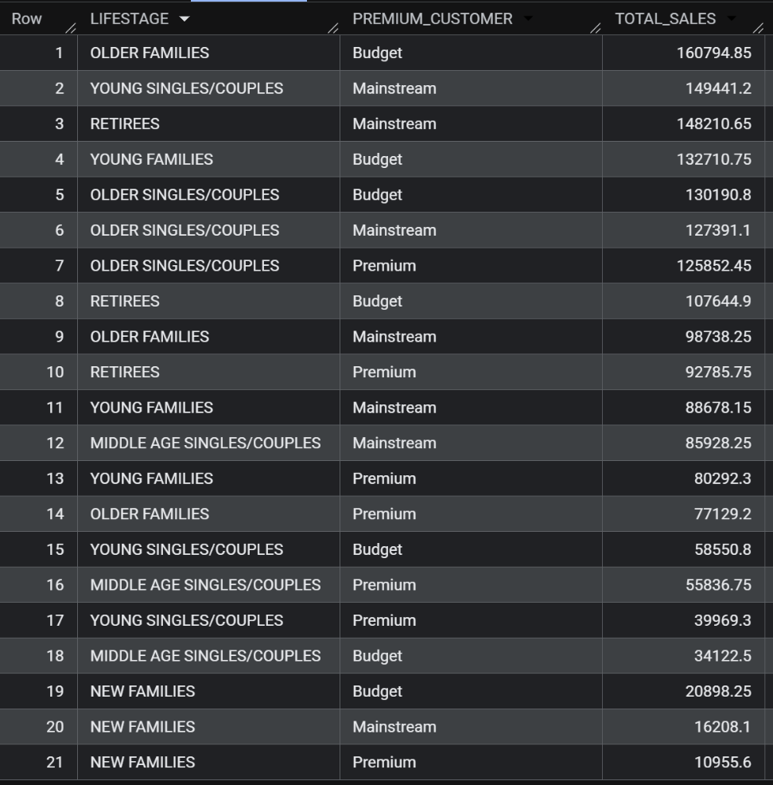
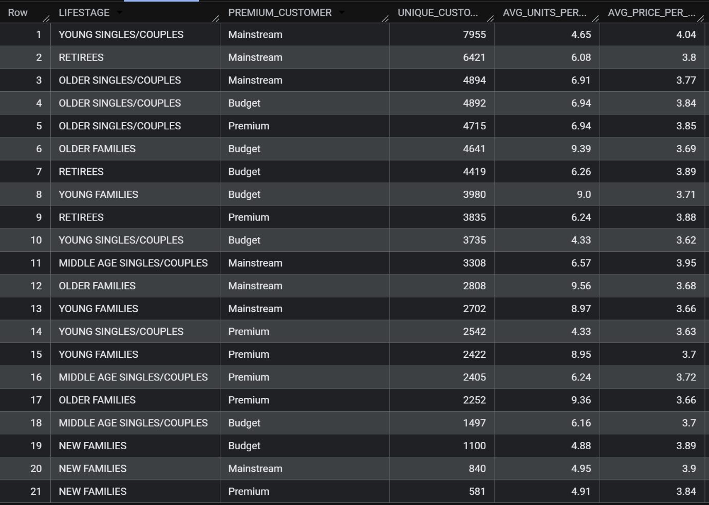
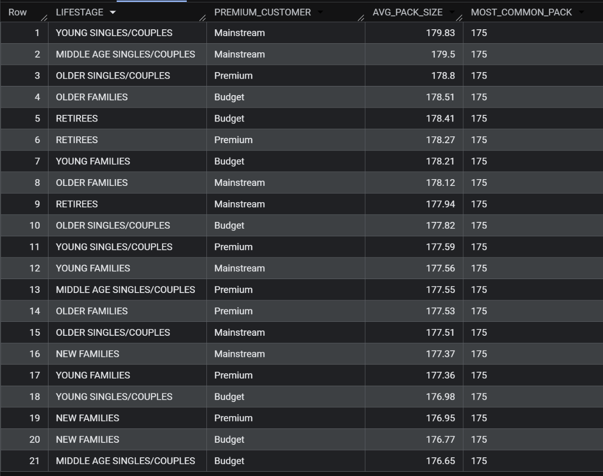
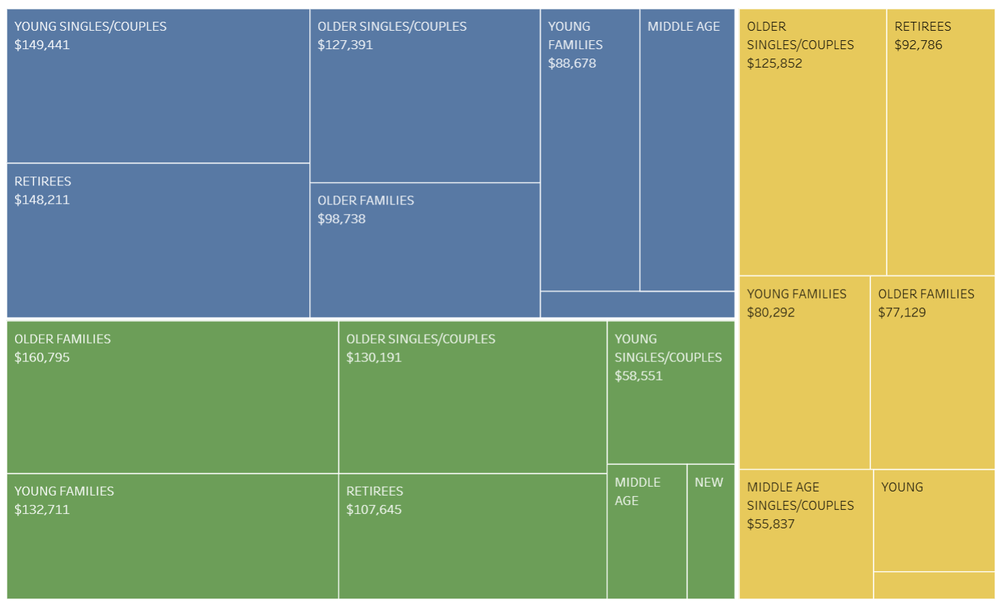
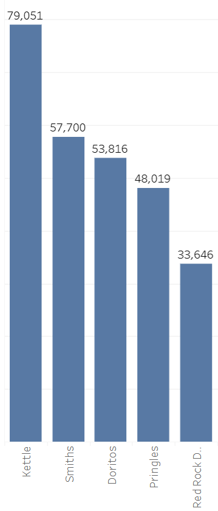
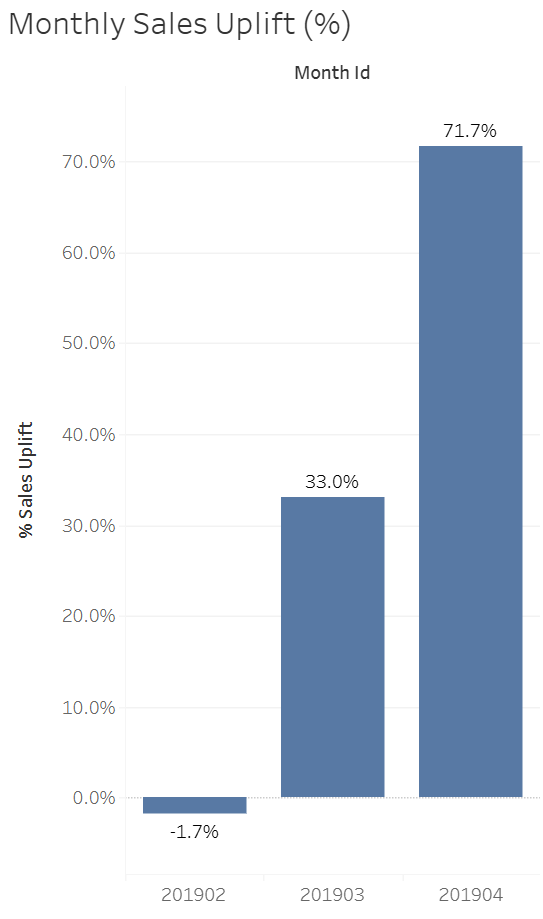

Virtual Job Simulator
Quantium Data Analytics

Figure 1: Full dashboard view.
Virtual Job Simulator
Figure 1: Full dashboard view.
As part of the Quantium Data Analytics simulation, I analyzed retail transaction data for a major supermarket (Woolworths) to uncover the drivers of "Chips" category sales. By examining over 260,000 transactions, I identified the most profitable customer segments and evaluated the success of a new store layout trial. My goal was to provide data-backed recommendations for shelf optimization and targeted marketing.
SQL (BigQuery): Primary engine used for heavy-duty data cleaning, outlier removal, and feature engineering (Pack Size/Brand extraction).
Tableau: Designed 2 interactive dashboards to visualize market share, segment growth, and A/B test results (Trial vs. Control stores).
To ensure the analysis focused on typical consumer behavior, I followed a rigorous data preparation workflow:
While this analysis is often performed in R or Python, I intentionally chose SQL (BigQuery) as my primary engine for this project.
The "Why": As an entry-level analyst, I wanted to master the most critical skill in the modern data stack. By performing 260,000+ row joins and outlier removals directly in the cloud, I ensured high performance and data consistency that local R/Python environments can't always match.
The Outcome: By running the transformations in BigQuery first, I didn't have to worry about processing errors or slow performance in Tableau. It allowed me to export a clean, refined dataset that was already validated and ready for visualization.
-- Identifying commercial outliers (Customers buying 200+ packs)
SELECT *
FROM `case-studies-478607.quantium_analysis.qvi_transaction_data`;
WHERE PROD_QTY >= 200;
-- Removing the outlier (Loyalty Card 226000) for clean analysis
CREATE OR REPLACE TABLE `case-studies-478607.quantium_analysis.clean_transactions_data` AS
SELECT *
FROM `case-studies-478607.quantium_analysis.qvi_transaction_data`;
WHERE LYLTY_CARD_NBR != 226000;
-- Joining Transaction data with Customer Demographics
SELECT
t.*,
c.LIFESTAGE,
c.PREMIUM_CUSTOMER
FROM `quantium-strategy.retail_data.transactions` AS t
LEFT JOIN `quantium-strategy.retail_data.customer_demographics` AS c
ON t.LYLTY_CARD_NBR = c.LYLTY_CARD_NBR;
-- Separating brand from Prod_Name column
CREATE OR REPLACE TABLE `case-studies-478607.quantium_analysis.clean_transactions_data` AS
SELECT *,
CASE
WHEN raw_brand = 'Red' THEN 'Red Rock Deli'
WHEN raw_brand = 'Grain' THEN 'Grain Waves'
WHEN raw_brand = 'Natural' THEN 'Natural Chip Co'
WHEN raw_brand = 'Cobs' THEN 'Cobs Popd'
WHEN raw_brand = 'Burger' THEN 'Smiths' -- Burger Rings are a Smiths product
ELSE raw_brand
END AS BRAND
FROM (
SELECT
*,
REGEXP_EXTRACT(PROD_NAME, r'^([^\s]+)') AS raw_brand
FROM `case-studies-478607.quantium_analysis.clean_transactions_data`
-- Separating pack size from Prod_Name column
CREATE OR REPLACE TABLE `case-studies-478607.quantium_analysis.clean_transactions_data` AS
SELECT *, CAST(REGEXP_EXTRACT(PROD_NAME, r'(\d+)') AS INT64) AS PACK_SIZE
FROM `case-studies-478607.quantium_analysis.clean_transactions_data`;
-- 1. TOTAL SALES BY SEGMENT (Who spends the most?)
SELECT
LIFESTAGE,
PREMIUM_CUSTOMER,
ROUND(SUM(TOT_SALES), 2) AS TOTAL_SALES
FROM `case-studies-478607.quantium_analysis.transaction_purchase_behavior_merged_data`
GROUP BY LIFESTAGE, PREMIUM_CUSTOMER
ORDER BY TOTAL_SALES DESC;

Figure 2: Results of total sales by customers and lifestage.
-- 2. CUSTOMER PROFILING (How many customers and how much do they buy?)
SELECT
LIFESTAGE,
PREMIUM_CUSTOMER,
COUNT(DISTINCT LYLTY_CARD_NBR) AS UNIQUE_CUSTOMERS,
ROUND(SUM(PROD_QTY) / COUNT(DISTINCT LYLTY_CARD_NBR), 2) AS AVG_UNITS_PER_CUST,
ROUND(SUM(TOT_SALES) / SUM(PROD_QTY), 2) AS AVG_PRICE_PER_UNIT
FROM `case-studies-478607.quantium_analysis.transaction_purchase_behavior_merged_data`
GROUP BY LIFESTAGE, PREMIUM_CUSTOMER
ORDER BY UNIQUE_CUSTOMERS DESC;

Figure 3: Results of Customer Profiling by customers and lifestage.
-- 3. PACK SIZE ANALYSIS (What sizes do they prefer?)
SELECT
LIFESTAGE,
PREMIUM_CUSTOMER,
ROUND(AVG(PACK_SIZE), 2) AS AVG_PACK_SIZE,
APPROX_TOP_SUM(CAST(PACK_SIZE AS STRING), 1, 1)[OFFSET(0)].value AS MOST_COMMON_PACK
FROM `case-studies-478607.quantium_analysis.transaction_purchase_behavior_merged_data`
GROUP BY LIFESTAGE, PREMIUM_CUSTOMER
ORDER BY AVG_PACK_SIZE DESC;

Figure 4: Results of Pack Size by customers and lifestage.
-- 1. Finding the "Control" Store (Correlation)
WITH trial_store_77 AS (
SELECT month_id, total_sales, total_customers
FROM `case-studies-478607.quantium_analysis.monthly_store_metrics`
WHERE STORE_NBR = 77 AND month_id < '201902'
),
all_other_stores AS (
SELECT STORE_NBR, month_id, total_sales, total_customers
FROM `case-studies-478607.quantium_analysis.monthly_store_metrics`
WHERE STORE_NBR != 77 AND month_id < '201902'
)
SELECT
others.STORE_NBR,
ROUND(CORR(others.total_sales, trial.total_sales), 4) AS corr_sales,
ROUND(CORR(others.total_customers, trial.total_customers), 4) AS corr_customers
FROM all_other_stores AS others
JOIN trial_store_77 AS trial ON others.month_id = trial.month_id
GROUP BY 1
HAVING corr_sales IS NOT NULL
ORDER BY corr_sales DESC
LIMIT 5;
-- 2. Validating the Match (Magnitude)
WITH metrics AS (
SELECT
STORE_NBR,
AVG(total_sales) AS avg_sales,
AVG(total_customers) AS avg_cust
FROM `case-studies-478607.quantium_analysis.monthly_store_metrics`
WHERE month_id < '201902'
GROUP BY 1
),
abs_diff AS (
SELECT
STORE_NBR,
ABS(metrics.avg_sales - (SELECT avg_sales FROM metrics WHERE STORE_NBR = 77)) AS sales_diff,
ABS(metrics.avg_cust - (SELECT avg_cust FROM metrics WHERE STORE_NBR = 77)) AS cust_diff
FROM metrics
)
SELECT
STORE_NBR,
-- Scaling the distance: 1 is closest, 0 is furthest
1 - (sales_diff - MIN(sales_diff) OVER()) / (MAX(sales_diff) OVER() - MIN(sales_diff) OVER()) AS mag_sales,
1 - (cust_diff - MIN(cust_diff) OVER()) / (MAX(cust_diff) OVER() - MIN(cust_diff) OVER()) AS mag_cust
FROM abs_diff
WHERE STORE_NBR IN (233, 41, 50) -- Testing your top candidates
ORDER BY mag_sales DESC;
-- 3. Calculating the "Uplift" (The Result)
WITH scaling_factor AS (
SELECT
SUM(CASE WHEN STORE_NBR = 77 THEN total_sales END) /
SUM(CASE WHEN STORE_NBR = 233 THEN total_sales END) AS sales_ratio
FROM `case-studies-478607.quantium_analysis.monthly_store_metrics`
WHERE month_id < '201902'
)
SELECT
month_id,
-- Actual Sales for Trial Store
MAX(CASE WHEN STORE_NBR = 77 THEN total_sales END) AS trial_sales,
-- Scaled Sales for Control Store (what we EXPECTED to happen)
ROUND(MAX(CASE WHEN STORE_NBR = 233 THEN total_sales END) * (SELECT sales_ratio FROM scaling_factor), 2) AS scaled_control_sales,
-- The Percentage Uplift
ROUND(((MAX(CASE WHEN STORE_NBR = 77 THEN total_sales END) / (MAX(CASE WHEN STORE_NBR = 233 THEN total_sales END) * (SELECT sales_ratio FROM scaling_factor))) - 1) * 100, 2) AS percentage_uplift
FROM `case-studies-478607.quantium_analysis.monthly_store_metrics`
WHERE month_id BETWEEN '201902' AND '201904'
GROUP BY 1
ORDER BY 1;

Impact: Inventory management should prioritize "Premium" shelf real estate for Kettle and Doritos to capture higher-margin sales from less price-sensitive shoppers.

Impact: The category reset proved that logical product grouping (pairing popular brands with high-traffic flow) significantly increases unplanned purchases, justifying a national rollout.

Impact: The 'Membership Drive' should be launched in April (coinciding with the April data surge identified in the audit) to capture riders as they form new habits.
This project was a deep dive into the complexities of commercial retail data. Beyond mastering BigQuery SQL and Tableau, I learned how to navigate the 'Data Quality Audit' phase—identifying and removing commercial outliers that would have otherwise skewed the entire strategic outlook. This case study reflects my ability to bridge the gap between technical data engineering and actionable business growth strategies.
Loading projects...